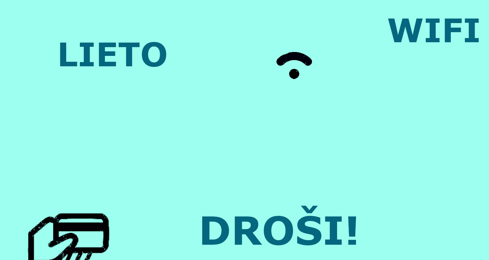

Rastrgrafika
Rastra grafika sastāv no pikseļiem un ir piemērota fotogrāfijām un GIF animācijām, kas ļauj izveidot vienkāršas animētas attēlu secības.

Vektorgrafika
Vektorgrafika izmanto matemātiskas līknes un formas, kas nodrošina augstu kvalitāti neatkarīgi no izmēra, padarot to ideāli piemērotu logotipu un ilustrāciju veidošanai.

Teksta apstrāde
Tekstapstrāde ietver dokumentu rediģēšanu un formatēšanu, izmantojot teksta redaktorus, piemēram, Microsoft Word vai Google Docs, lai uzlabotu izkārtojumu, fontus un struktūru.
Izklājlapas
Izklājlapas, piemēram, Excel vai Google Sheets, tiek izmantotas datu analīzei, tabulu veidošanai un aprēķiniem, izmantojot formulas un diagrammas, lai efektīvi vizualizētu informāciju.
Video
Video apstrāde ietver materiāla montāžu, efektu pievienošanu un skaņas apstrādi, lai radītu klipu, kas demonstrē reklāmsuvenīra izstrādes procesu un tā galarezultātu.
3D modelēšana
3D modelēšana ietver trīsdimensiju objektu veidošanu, un 3D kuba skaldne ir pamata piemērs, kas demonstrē formu un perspektīvu modelēšanas programmās kā Blender vai Tinkercad.